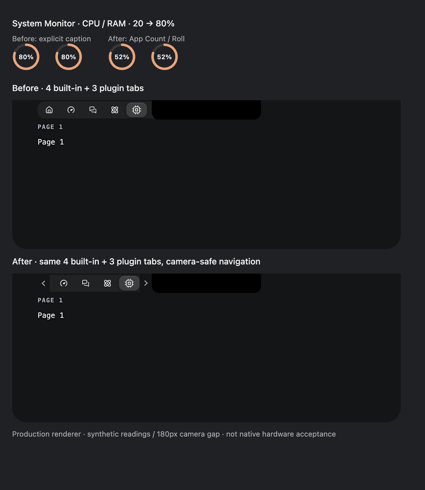
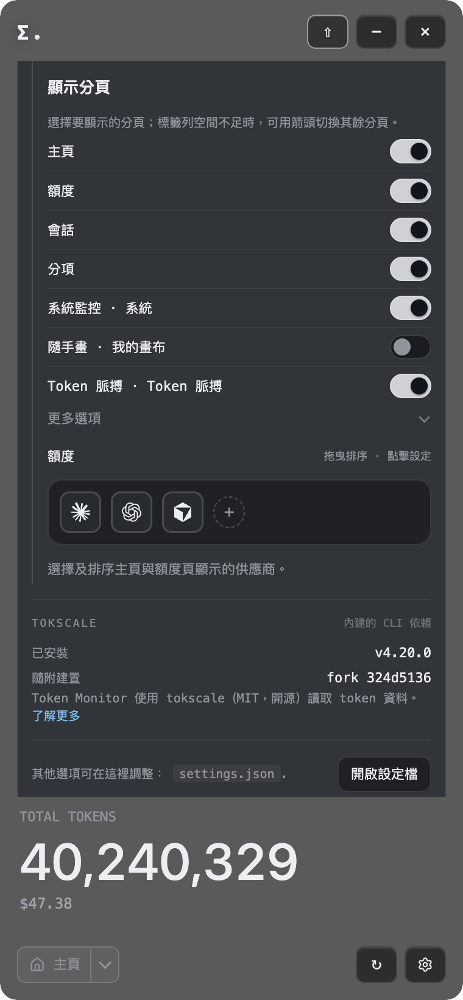

Notch 選頁與數字動畫
原本設定統一選擇內建／插件頁面；可用頁面與畫面容納量分開，超出時用箭頭或鍵盤切換。
前後對比
實際 App 設定

隔離 Electron production renderer；相同測試資料、4 個內建＋3 個插件頁及 180px 模擬瀏海。修正後 52% 是 Count 動畫途中的截圖，終值同樣是 80%。不是實體瀏海驗收。

實際 feature App，380 CSS px，暫存驗收設定。已測儲存／恢復選擇及無橫向溢出；未涵蓋實體硬件手勢。